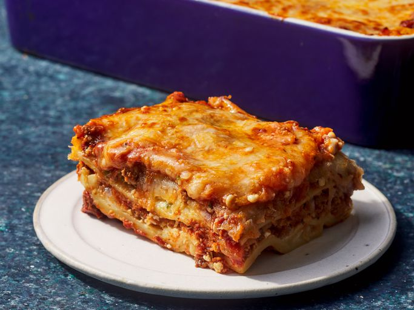

Lasagna recipe

Lasagna is a type of pasta made from wide, flat sheets, typically layered with fillings such
as meat sauce, béchamel, and cheese, then baked until bubbly.
It originated in Italy and is known for its hearty and comforting nature,
often served as a main dish
Ingredients
- Meat
- Onion and garlic
- Tomato products
- Sugar
- Spices and seasonings
- Lasagna noodles
- Cheeses
- Egg
Steps
- Make the meat sauce
- Cook the noodles
- Make the ricotta mixture
- Layer the lasagna according to the recipe instructions
- Cover with foil and bake
- Let the lasagna rest before serving
Homepage